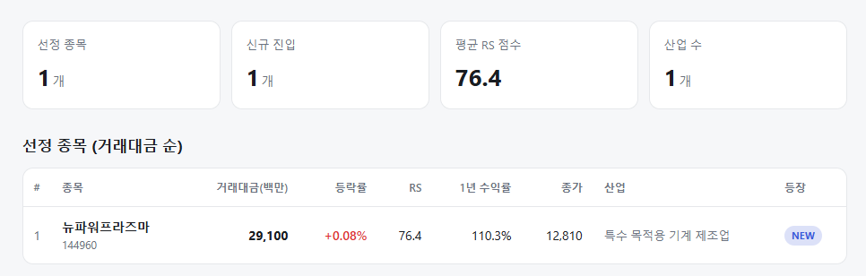
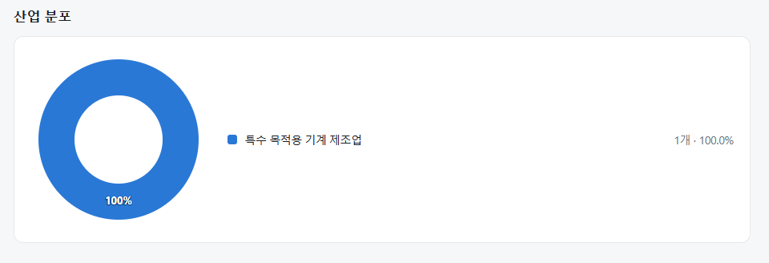
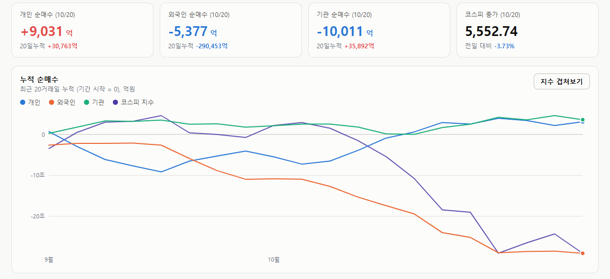
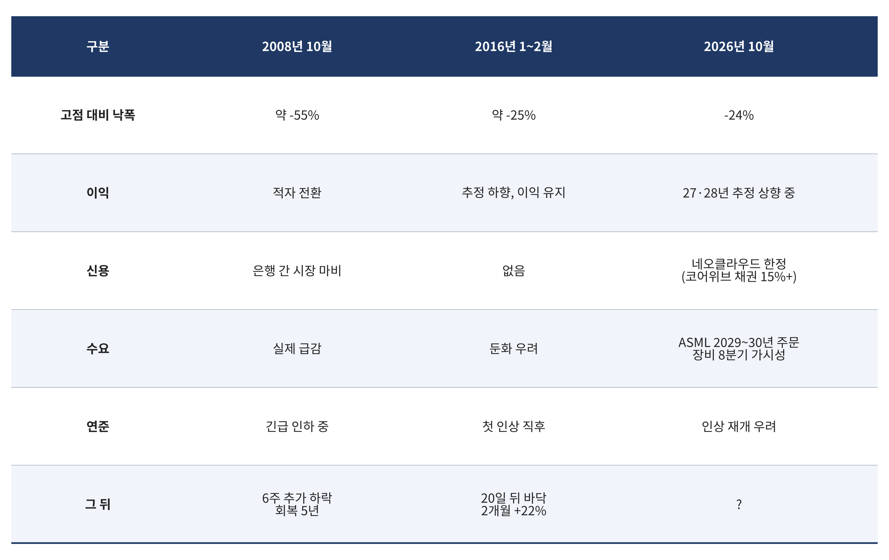

매일의 주도주 정리를 위해 기록합니다.
연속적으로 나온 종목들 또는 상승 후 조정받는 종목 위주로 리서치 해보시면 좋을 것 같습니다.


*오늘 퀀트픽은 없습니다.
#주도섹터
담배 및 카드
주요 업종: 담배(+0.41%), 카드(+0.12%).
분석: 전 섹터가 파란불을 켠 폭락장 속에서 필수소비재 성격의 담배 업종과 고배당 매력이 있는 카드 업종만이 간신히 강보합을 유지하며 극단적인 회피성 자금을 흡수했습니다.
#조정섹터
우주항공·방산 및 에너지·조선
주요 업종 및 종목: 우주항공과국방(-10.71%), 에너지장비및서비스(-8.33%), 조선(-7.14%), 석유와가스(-6.97%), 한화에어로스페이스(-11.82%).
분석: 우주항공과국방 업종이 -10% 넘게 폭락하며 업종 하락 1위를 기록했습니다. 주도주였던 한화에어로스페이스가 11%대 급락을 맞았고, 원전(에너지장비) 및 조선 인프라 밸류체인 전반에서 거친 패닉 셀링이 발생했습니다.
반도체 메가 캡 및 2차전지
주요 종목: 삼성SDI(-6.25%), SK스퀘어(-5.13%), SK하이닉스(-4.78%), 삼성전자(-3.21%).
분석: 전일 반등을 주도했던 2차전지(삼성SDI -6.25%)가 하루 만에 6%대 급락세로 돌아섰고, SK하이닉스와 삼성전자 등 반도체 투톱 역시 기관의 매도 포화에 속절없이 무너졌습니다.
#수급동향

코스피 지수는 -3.73% 급락한 5,552.74로 마감하며 하루 만에 상승분을 모두 반납하고 5,500선까지 밀렸습니다. 코스닥 지수 역시 -3.34% 급락한 781.84를 기록하며 투심이 재차 얼어붙었습니다.
유가증권시장에서 전일 매수했던 기관 투자자가 하루 만에 1조 11억 원(20일 누적 +3조 5,892억 원)을 순매도하며 지수 폭락을 주도했고, 외국인 투자자 역시 5,377억 원(20일 누적 -29조 453억 원)을 순매도했습니다. 개인 투자자가 9,031억 원(20일 누적 +3조 763억 원)을 순매수하며 대응했습니다.
반도체지수(sox) 8거래일 연속 하락, 2008 vs 2016년 비교
필라델피아 반도체지수(SOX)가 10월 7일부터 16일까지 8거래일 연속 하락했습니다. 누적 -15.7%, 6월 22일 사상 최고치 대비 -24%입니다. 8일 연속 하락은 2008년 10월 리먼 파산 직후 이후 처음입니다. 월요일 +3%로 연속 하락은 끊겼지만, 시가보다 낮게 마감하며 "종가 하락 또는 시가 아래"는 10일째로 역대 타이 기록을 이어갔습니다. “2008년 이후 처음”이라는 말이 무겁게 들립니다. 그래서 2008년에 실제로 무슨 일이 있었는지, 그리고 같은 기록을 세웠던 다른 해와 비교해 봤습니다.
① 2008년 10월 — 연속 하락이 끝나도 바닥이 아니었다
2008년의 연속 하락은 10월 10일에 끝났습니다. 그 시점 SOX는 이미 2007년 고점 대비 절반 이상 빠진 상태였습니다. 그런데 바닥은 거기가 아니었습니다. 6주를 더 밀려 11월 20일에야 약 170에서 바닥을 찍었고, 연속 하락 종료 시점 대비 약 4분의 1이 추가로 빠졌습니다. 전고점을 회복하는 데는 5년이 걸렸습니다.
이유는 분명합니다. 리먼 파산으로 은행 간 자금시장이 멈췄고, 반도체 회사들의 이익은 둔화가 아니라 적자로 돌아섰습니다. 독일 메모리 회사 키몬다는 이듬해 1월 파산했습니다. 주가가 싸진 것이 아니라 분모(이익)가 사라진 하락이었습니다.
② 2016년 2월 — 연속 하락이 끝나고 20일 뒤가 바닥이었다
2016년 1월에도 비슷한 기록이 있었습니다. 종가 하락 또는 시가 아래 마감이 10일 연속으로, 이번과 같은 기록입니다. 당시 배경은 중국 위안화 절하와 서킷브레이커, 유가 26달러, 연준의 첫 금리 인상이었습니다. SOX는 2015년 6월 고점 대비 약 -25%까지 밀렸습니다.
결말은 달랐습니다. 연속 하락이 끝나고 약 20거래일 뒤인 2월 11일에 바닥을 찍었고, 그 뒤 2개월간 +22% 올랐으며, 6개월 만에 전고점을 회복했습니다. 신용 사건이 없었고, 이익 추정이 흔들렸을 뿐 이익 자체는 유지됐기 때문입니다.
③ 지금은 어느 쪽인가

낙폭, 이익, 수요 세 가지는 2016년 쪽입니다. 고점 대비 -24%는 2016년과 거의 같은 수준이고, 이익 추정치는 깎이기는커녕 27·28년이 올라가고 있으며, 장비 주문은 2030년까지 들어오고 있습니다. 2008년의 핵심이었던 "이익 소멸"과 "신용 마비"는 지금 없습니다.
다만 2016년에 없던 것이 두 가지 있습니다.
첫째, AI 자금조달의 신용 요소입니다. 코어위브 채권 금리가 15%를 넘었고, 지난주 하락의 직접 원인은 칩 수요가 아니라 데이터센터를 짓는 돈의 조달 불안이었습니다.
둘째, 레버리지입니다. 미국 신용잔고가 9월 1.48조 달러로 사상 최대이고, GDP 대비 4.5%로 2021년 정점(3.6%)을 넘었습니다. 2016년은 가벼운 상태에서 떨어진 것이고, 지금은 무거운 상태에서 떨어지고 있습니다.
그래서 답은 “2016년의 몸에 2008년의 그림자”입니다. 몸은 2016년입니다. 그림자가 몸이 되는 조건은 코어위브의 신용 불안이 BB 등급 전체로 번지는 것이고, 아직 그 선은 넘지 않았습니다.
④ 공포는 이미 극단에 있다
2016년형이라면 바닥은 가깝고, 그 신호는 공포의 극단에서 나옵니다. 지난 금요일 S&P 풋옵션 명목 거래가 3.3조 달러로 사상 최대였고, CBOE 풋 거래량 960만 계약은 2015년 이후 최다였습니다. 글로벌 기술주 펀드에서 48억 달러가 빠졌지만 전체 주식 펀드로는 200억 달러가 들어와 4주 연속 유입입니다. 시장을 떠난 것이 아니라 기술주에서 다른 곳으로 옮긴 것입니다.
그리고 월요일은 1987년 블랙먼데이 39주년이었습니다. 2026년 200번째 거래일 기준 S&P가 연초 대비 +10~20% 구간에 있는 해는 19번 중 18번 남은 기간에 올랐습니다. 모두가 헤지를 걸어둔 상태에서 시장은 반등했습니다.
8거래일 연속 하락은 2008년 이후 처음이지만, 지금 시장의 체형은 2008년이 아니라 2016년입니다. 이익이 살아 있고 수요가살아 있습니다. 2016년의 전례대로라면 바닥은 연속 하락 종료 후 약 20거래일, 11월 중순 전후이고 그 뒤 두 달이 반등 구간입니다.
지켜볼 선은 두 개입니다. SOX의 7월 저점 10,447과 코어위브·오라클의 CDS. 전자가 지켜지고 후자가 번지지 않으면 2016년이고, 둘 중 하나가 무너지면 그림자가 길어집니다.
참고: (AI 사이클 리스크 모니터) https://pdhman.github.io/report-summary/aicycle.html
어려운장 다들 고생 많으십니다.
오늘 하루도 수고하셨습니다!